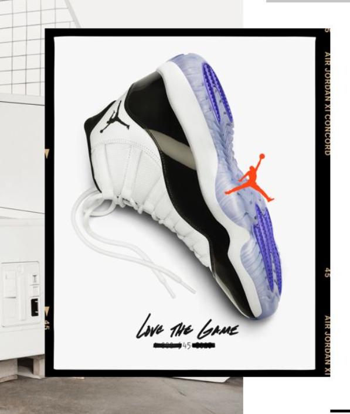

Air Jordan XI

© 1995
乔丹11代于1995年11月推出，是乔丹征战95-96赛季的战靴。乔丹11代不但是乔丹系列中的鼎扛之作，它对之后整个耐克篮球鞋产生了深远的影响。
第二个三连冠的开始，乔丹本人最爱的一双鞋，在95年季后赛就提前上脚了。经典无需赘言，配置是全掌sole，这同AJ7、AJ10不同，气垫已经延伸到了前掌。从设计角度而言，乔丹11代突破性的采用漆皮作为鞋面材料，使之成为高档篮球鞋的标志。同时运用了全掌内置气垫技术，加之在中底采用了全掌碳塑纤维承托板，使整双鞋在避震这一项指标中达到极至。。值得注意的是，内置气垫技术对于内线球员或许过于柔软，但是对于打后卫和小前锋类型的球员舒适恰到好处。
舒适的脚感和快速反应的场地感也不逊色于任何一双运用全掌气垫技术的球鞋。鞋的底采用水晶橡胶，这种看起来透明的材质是用人造橡胶压缩而成，需要注意的是这种材料很有可能因为长期的过分光照而氧化变黄。但在表面干净的时候，拥有强大的抓地能力。另外，鞋底部分还有隐约的JUMPMAN字样。 快速系带系统使乔丹11代的穿脱非常容易，但是由于鞋身采取了网状纤维，使得整双鞋的重量大大减轻，是乔丹系列最轻便的一款。唯一的缺点在于很有可能由于长期穿着使整双鞋产生功能性下降。
总之，全新设计的乔丹11代是乔丹系列篮球鞋中从未出现过的“后卫篮球鞋”，它对于乔丹系列，甚至整个篮球鞋的发展史绝不仅仅是经典那么简单。也许我们可以认为这款是新旧篮球鞋的分水岭。如果AirForceI和乔丹1代是篮球鞋的始祖，那么乔丹11代则是篮球鞋发展史上最重要的里程碑。
95至96赛季，乔丹复出后第一次打完整个赛季，公牛队在常规赛获得了创造NBA纪录的72场胜利，乔丹第八次获得得分王称号，并再度当选全明星赛MVP。在乔丹率领下，公牛队重新杀回总决赛，并以4-2的总比分击败西部的超音速队，第四次夺得NBA总冠军，乔丹也再次当选总决赛MVP，包揽了该赛季的三项MVP称号。